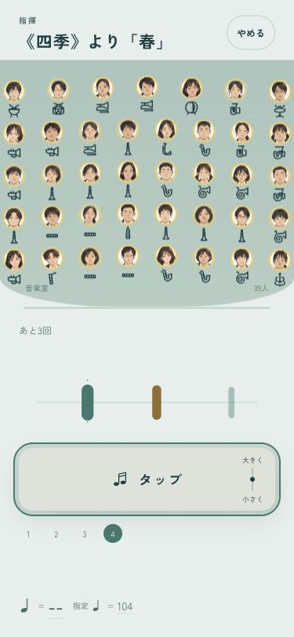
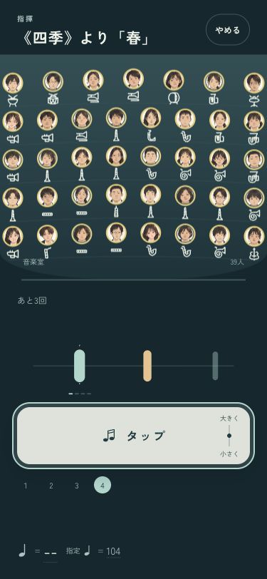
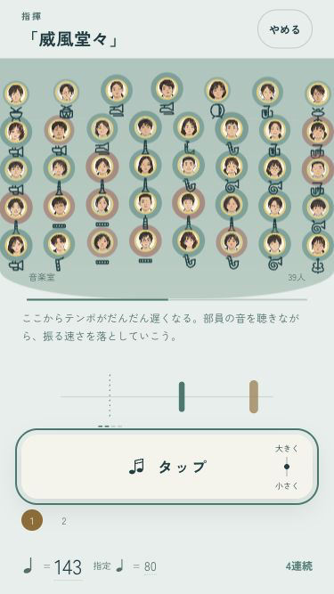
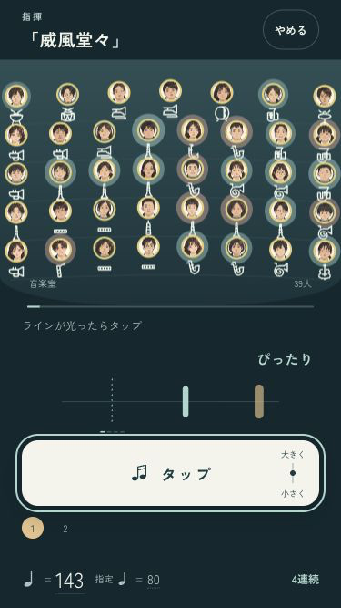

B · 舞台の中へ
1拍目が、先に見える。
小節のはじめを太い金色の光で予告。ラインへ届くと、操作面と「1」も金色に。途中から練習するときも、曲の拍に合わせて数えます。
「聴き方」の範囲を「鳥の歌」または「主題（終わり）」にして「指揮する」。それぞれ3拍目・4拍目から数え始めます。確認ページはセーブを書き換えません。


小さい画面でも確認


iPhoneへ導入・起動済み。実機の見え方・音・操作感は端末で確認できます。ミラーリングなし。
codex/design · pushなし · 変更と確認の記録